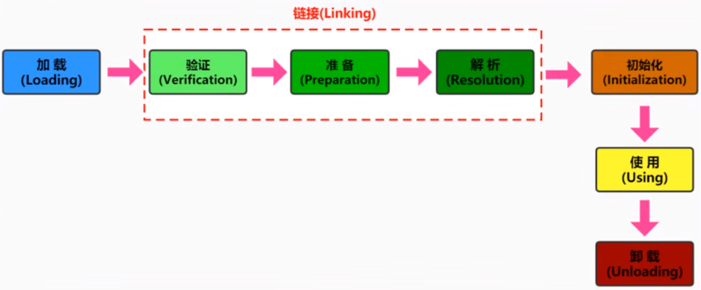
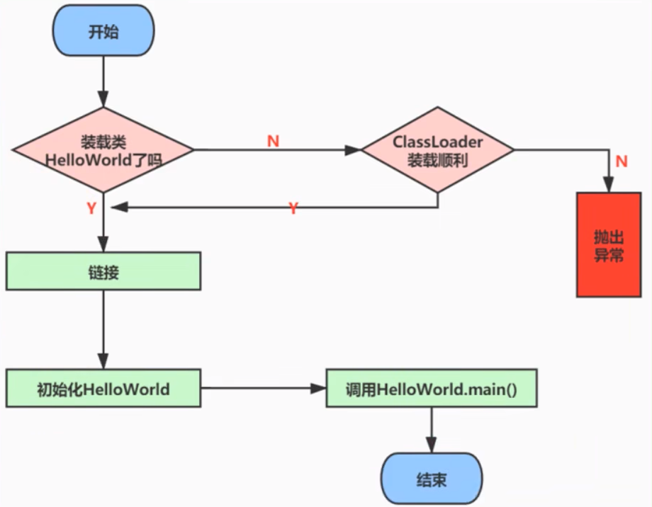
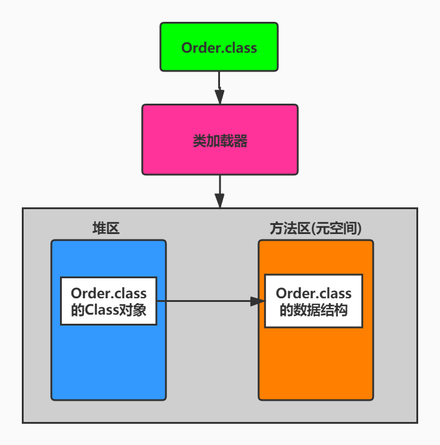
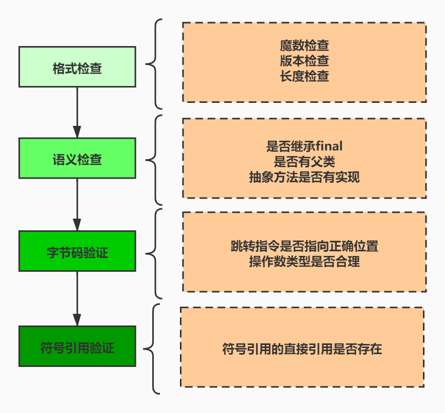

类的加载过程详解
01-概述
在 Java 中数据类型分为基本数据类型和引用数据类型。基本数据类型由虚拟机预先定义，引用数据类型则需要进行类的加载。
按照 Java 虚拟机规范，从 class 文件到加载到内存中的类，到类卸载出内存为止，它的整个生命周期包括如下7个阶段：

其中，验证、准备、解析3个部分统称为链接(Linking)
从程序中类的使用过程看:

面试题
- 描述以下 JVM 加载 Class 文件的原理机制
- 类加载过程
- 加载类的时机
02-过程一：Loading（加载）阶段
1-加载完成的操作
加载的理解
**所谓加载，简而言之就是将 Java 类的字节码文件加载到机器内存中，并在内存中构建出 Java 类的原型一一类模板对象。**所谓类模板对象，其实就是 Java 类在VM内存中的一个快照，JVM将从字节码文件中解析出的常量池、类字段、类方法等信息
存储到类模板中，这样 JVM 在运行期便能通过类模板而获取 Java 类中的任意信息，能够对 Java 类的成员变量进行遍历，也能进行 Java 方法的调用。
反射的机制即基于这一基础。如果 JVM 没有将 Java 类的声明信息存储起来，则 JVM 在运行期也无法反射。
加载完成的操作
加载阶段，简言之，查找并加载类的二进制数据，生成 Class 的实例。
在加载类时，Java 虚拟机必须完成以下3件事情：
- 通过类的全名，获取类的二进制数据流。
- 解析类的二进制数据流为方法区内的数据结构( Java 类模型)
- 创建 java.lang.Class 类的实例，表示该类型。作为方法区这个类的各种数据的访问入口。
2-二进制流的获取方式
对于类的二进制数据流，虚拟机可以通过多种途径产生或获得。（只要所读取的字节码符合 JVM 规范即可）
- 虚拟机可能通过文件系统读入一个 class 后缀的文件（最常见）
- 读入 jar、zip 等归档数据包，提取类文件。
- 事先存放在数据库中的类的二进制数据
- 使用类似于 HTTP 之类的协议通过网络进行加载
- 在运行时生成一段 Class 的二进制信息等
在获取到类的二进制信息后，Java 虚拟机就会处理这些数据，并最终转为一个 java.lang.Class的实例。
如果输入数据不是 ClassFile 的结构，则会抛出ClassFormatError。
3-类模型与Class实例的
1、类模型的位置
加载的类在JVM中创建相应的类结构，类结构会存储在方法区（JDK1.8 之前：永久代；JDK1.8 及之后：元空间）。
2、Class 实例的位置
类将 .class 文件加载至元空间后，会在堆中创建一个 Java.lang.Class 对象，用来封装类位于方法区内的数据结构，该
Class 对象是在加载类的过程中创建的，每个类都对应有一个 Class 类型的对象。(instancKass --> mirror: Class的实例)
3、图示

外部可以通过访问代表 Order 类的 Class 对象来获取 Order 的类数据结构
4、再说明
Class 类的构造方法是私有的, 只有 JVM 能够创建
java.lang.Class 实例访问类型元数据的接口, 也是实现反射的关键数据、入口. 通过 Class 类提供的接口, 可以获取目标类所关联的 .class 文件中具体的数据结构: 方法、字段信息等.
通过Class类, 获得了java.lang.String类的所有方法信息, 并打印方法访问标识符、描述符
public class LoadingTest {
public static void main(String[] args) {
try {
Class clazz = Class.forName("java.lang.String");
//获取当前运行时类声明的所有方法
Method[] ms = clazz.getDeclaredMethods();
for (Method m : ms) {
//获取方法的修饰符
String mod = Modifier.toString(m.getModifiers());
System.out.print(mod + " ");
//获取方法的返回值类型
String returnType = m.getReturnType().getSimpleName();
System.out.print(returnType + " ");
//获取方法名
System.out.print(m.getName() + "(");
//获取方法的参数列表
Class<?>[] ps = m.getParameterTypes();
if (ps.length == 0) {
System.out.print(")");
}
for (int i = 0; i < ps.length; i++) {
char end = (i == ps.length - 1) ? ')' : ',';
//获取参数类型
System.out.print(ps[i].getSimpleName() + end);
}
System.out.println();
}
} catch (ClassNotFoundException e) {
throw new RuntimeException(e);
}
}
}4-数组类的加载
创建数组类的情况稍微有些特殊，因为数组类本身并不是由类加载器负责创建，而是由 JVM 在运行时根据需要而直接创建的，但数组的元素类型仍然需要依靠类加载器去创建。创建数组类（下述简称A）的过程：
- 如果数组的元素类型是引用类型，那么就遵循定义的加载过程递归加载和创建数组 A 的元素类型
- JVM 使用指定的元素类型和数组维度来创建新的数组类
如果数组的元素类型是引用类型，数组类的可访问性就由元素类型的可访问性决定。否则数组类的可访问性将被缺省定义为 public。
03-过程二：Linking（链接）阶段
1-环节1：链接阶段之Verification（验证）
验证阶段(Verification)
-
当类加载到系统后，就开始链接操作，验证是链接操作的第一步。
-
它的目的是保证加载的字节码是合法、合理并符合规范的。
验证的步骤比较复杂, 实际需要验证的项目也很繁多, 大体上 Java 虚拟机需要做以下检查, 如图所示:

整体说明：
验证的内容则涵盖了类数据信息的格式验证、语义检查、字节码验证，以及符号引用验证等。
- 其中格式验证会和加载阶段一起执行。验证通过之后，类加载器才会成功将类的二进制数据信息加载到方法区中。
- 格式验证之外的验证操作将会在方法区中进行。
链接阶段的验证虽然拖慢了加载速度，但是它避免了在字节码运行时还需要进行各种检查。（磨刀不误砍柴工）
具体说明：
-
格式验证：是否以魔数 0xCAFEBABE 开头，主版本和副版本号是否在当前 Java 虚拟机的支持范围内，数据中每一个项是否都
拥有正确的长度等。 -
Java 虚拟机会进行字节码的语义检查，但凡在语义上不符合规范的，虚拟机也不会给予验证通过。比如：
- 是否所有的类都有父类的存在（在 Java 里，除了 Object 外，其他类都应该有父类）
- 是否一些被定义为 final 的方法或者类被重写或继承了
- 非抽象类是否实现了所有抽象方法或者接口方法
- 是否存在不兼容的方法（比如方法的签名除了返回值不同，其他都一样，这种方法会让虚拟机无从下手调度；abstract 情况下的方法，就不能是 final 的了)
-
Java 虚拟机还会进行字节码验证，字节码验证也是验证过程中最为复杂的一个过程。它试图通过对字节码流的分析，判断字节码是否可以被正确地执行。比如：
- 在字节码的执行过程中，是否会跳转到一条不存在的指令
- 函数的调用是否传递了正确类型的参数
- 变量的赋值是不是给了正确的数据类型等
栈映射帧( StackMapTable )就是在这个阶段，用于检测在特定的字节码处，其局部变量表和操作数栈是否有着正确的数据类型。但遗憾的是，100% 准确地判断一段字节码是否可以被安全执行是无法实现的，因此，该过程只是尽可能地检查出可以预知的明显的问题。如果在这个阶段无法通过检查，虚拟机也不会正确装载这个类。但是，如果通过了这个阶段的检查，也不能说明这个类是完全没有问题的。
在前面3次检查中，已经排除了文件格式错误、语义错误以及字节码的不正确性。但是依然不能确保类是没有问题的。
-
校验器还将进行符号引用的验证。Class 文件在其常量池会通过字符串记录自己将要使用的其他类或者方法。因此，在验证阶段，虚拟机就会检查这些类或者方法确实是存在的，并且当前类有权限访问这些数据，如果一个需要使用类无法在系统中找到，则会抛出 NoClassDefFoundError，如果一个方法无法被找到，则会抛出 NoSuchMethodError。
此阶段在解析环节才会执行。